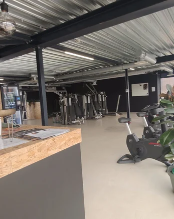

Fitness 40+ in Leiderdorp draait om meer dan afvallen. Na je 40e verandert je lichaam: spiermassa neemt af, herstel duurt langer en blessures liggen op de loer. Bij Fit Up trainen we slim en methodisch — met aandacht voor kracht, mobiliteit en herstel, zodat je energieker, sterker en pijnvrij door het leven gaat.
Na je 40e tellen andere dingen. Onze aanpak houdt rekening met je lichaam, je herstel en je drukke leven.
De zorgen rond sporten na je 40e, en hoe Fit Up Leiderdorp daar verstandig mee omgaat.
Vier stappen waarin we rekening houden met je lichaam, herstel en agenda.
Fit Up Leiderdorp begeleidt 40-plussers met een aanpak op maat, aan de Weversbaan 9 vlak bij Winkelhof. Goed bereikbaar vanuit Leiderdorp, Leiden, Oegstgeest en Voorschoten — gratis parkeren voor de deur.

Plan een gratis intake. We kijken naar je doel, je lichaam en je agenda, en maken een plan dat na je 40e écht werkt.